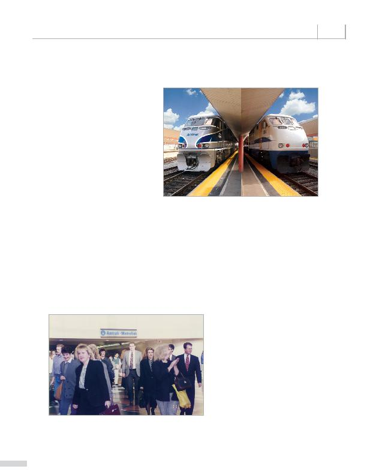

|

partnered with the California Department of Transportation (Caltrans) to introduce the Rail 2 Rail pilot program, which offered Metrolink Monthly Pass holders along the Orange and Ventura County corridors additional commuting options by adding more trains and improving connectivity. Metrolink Monthly Pass holders could choose from 78 Amtrak Pacific Surfliner trains within their designated station pairs to ride at no additional cost. Amtrak Pacific Surfliner pass holders were able to ride any Metrolink train within their designated station pairs free of charge as well. The program became extremely popular among Metrolink and Amtrak riders, and it became a permanent program. In 2005, Metrolink, Amtrak and Caltrans celebrated the 1 millionth Rail 2 Rail customer. The program has paved the way for other partnerships that have improved connections for Metrolink riders. bus and rail carriers, giving them added value for being Metrolink riders. For example, Monthly Pass holders with a valid flight boarding pass can ride the FlyAway bus between L.A. Union Station and LAX at no additional cost. All Metrolink ticket holders can take a free shuttle between the Burbank-Bob Hope Airport Station and the airport free of charge. They can also take advantage of a complimentary shuttle between Burbank Station. Riders who present a valid Metrolink ticket can take the City of Irvine's iShuttle to and from the Tustin Station to the John Wayne Airport. |